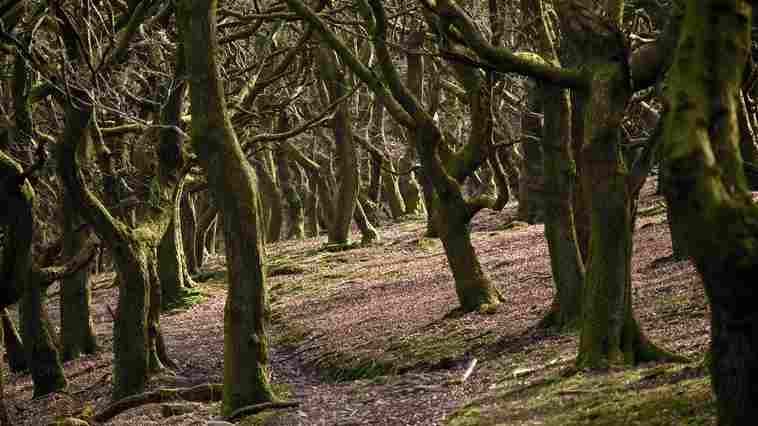

Whisper Bay Forest School
Welcome to Whisper Bay Forest School, nestled in the enchanting village of Whisper Bay, Cornwall. Our school is dedicated to fostering a deep connection with nature, inspired by the lush, mystical forests that surround our quaint village. Established in 1987, Whisper Bay Forest School is a haven for children and adults alike who wish to explore, learn, and grow in harmony with the natural world.
Our mission
At Whisper Bay Forest School, our mission is to nurture a love for the outdoors while providing a holistic education that integrates environmental stewardship, creativity, and community spirit. We believe that nature is the best classroom, and our programs are designed to encourage curiosity, resilience, and a sense of wonder in all our participants.
What we offer
- Forest Immersion Programs: Our core offering, these programs are tailored for children and adults, providing immersive experiences in the forest. Participants learn about local flora and fauna, forest ecology, and sustainable practices.
- Outdoor Learning Curriculum: Designed for school-age children, our curriculum includes hands-on activities such as wildlife tracking, plant identification, and survival skills, all aimed at fostering a deeper understanding of the natural environment.
- Community Events: We host a variety of events throughout the year, including guided nature walks, forest festivals, and conservation projects. These events are open to everyone in Whisper Bay and beyond, promoting community engagement and environmental awareness.
- Workshops and Retreats: For those seeking a deeper connection with nature, we offer specialized workshops and retreats. Topics range from natural crafts and herbal medicine to mindfulness in nature and bushcraft skills.
Our Philosophy
We are inspired by the principles of forest schools, which originated in Scandinavia and emphasize child-led learning, play, and exploration in natural settings. At Whisper Bay Forest School, we extend these principles to all ages, believing that everyone can benefit from spending time in nature.
Our approach is rooted in respect for the environment, understanding that we are stewards of the earth. We strive to instill a sense of responsibility and care for our natural surroundings in all our participants, ensuring that the beauty and vitality of Whisper Bay's forests are preserved for future generations.
Meet our team
Our dedicated team is composed of experienced educators, naturalists, and outdoor enthusiasts who are passionate about sharing their love for the forest. Each team member brings a unique set of skills and knowledge, creating a rich, supportive environment for learning and discovery.
Join us at Whisper Bay Forest School and embark on a journey of exploration and growth amidst the serene and mysterious beauty of Cornwall's forests. Whether you are a local resident or a visitor, we invite you to experience the magic of Whisper Bay and discover the wonders of the natural world with us.
For more information about our programs and upcoming events, please contact us at [contact information] or visit our office in Whisper Bay. We look forward to welcoming you to our forest family!